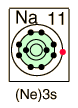
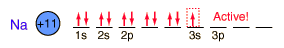

Sodium
|  | Sodium, like the other alkali metals (Group I), is a sivery-white metal of very high chemical reactivity.
Sodium is one of the big 8 elements in the Earth's crust, being the sixth most abundant element at about 2.8% by weight. It is a constituent of the plagioclase form of feldspar, one of the most abundant minerals on the earth.
|
The most important compound of sodium is sodium chloride, NaCl (common table salt). It crystallizes as colorless cubes. Comprising 3% of sea water and also occurring in large solid deposits and underground salt brines, NaCl is an abundant mineral. In crystalline form it is given the mineral name halite. It is important as an electrolyte in human blood and plasma, which contain about 0.9 grams of NaCl per 100 ml.
Sodium chloride is used for the extraction of metallic sodium and gaseous chlorine, as well as for preparation of other compounds of these elements.
Sodium borates such as borax (sodium tetraborate decahydrate, Na2B4O7. 10H2O), kernite (sodium tetraborate tetrahydrate, Na2B4O7. 4H2O), and colemanite (calcium hexaborate pentahydrate, Ca2B6O11. 5H2O) form vast deposits of boron in California .
Sodium hydroxide (NaOH) is a very important laboratory reagent and a widely used industrial chemical. Called caustic soda, it is very corrosive to the skin. It is used in the manufacture of soap, the refining of petroleum, the manufacture of paper, textiles, rayon, cellulose film, and many other products.
The properties of liquid sodium metal make it useful as a coolant in fast breeder reactors and as a heat transfer agent for very high temperature reactions.

|
Index
Periodic Table
Chemistry concepts
Reference
Pauling
Ch. 26 |